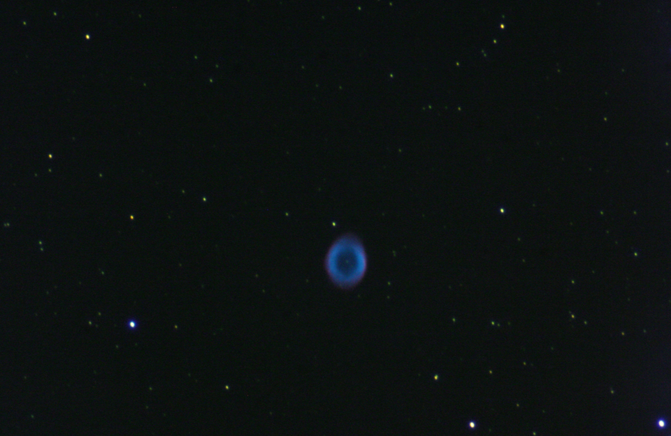
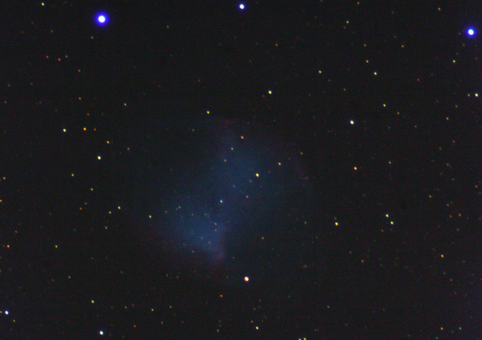
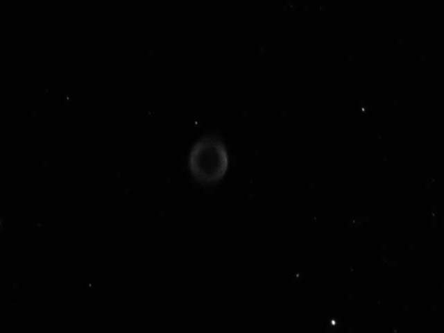
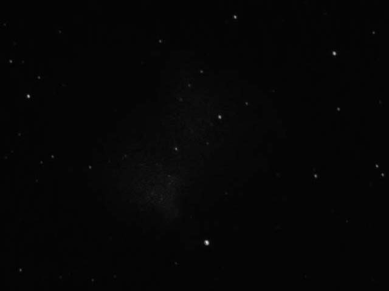

A Tale of Two Nebulae
Yet another contribution from Mike Roman's camera, this time of two planetary nebulae. The first, the Ring Nebula, is a Fuertes favorite. The Dumbbell Nebula, though just as well known, is fainter and farther to the south, so we tend not to look at it as much. The two images on the bottom show an approximation of how the nebulae look to the eye.
Planetary nebulae form when Sun-like stars expand into red giants, bloated monstrosities around the size of Earth's orbit. Because the force of gravity weakens with distance, the inflated star has a very weak grip on its surface layers. All stars blow matter off into space, but red giants do so very quickly, and it is this ejected material that becomes a planetary nebula as the star whittles itself down to its core. A few CAS members have called this process an explosion — well, sure, if you let your explosions take a thousand years! Planetary nebulae vanish almost as quickly as they form, expanding and mixing into the interstellar medium within a few tens of thousands of years. In contrast, the original star lived for billions of years.
The Ring Nebula is around 2300 light years away and 6-8000 years old. The Dumbbell is much closer, with a distance of only 420 light years, but the age is much less certain, with different techniques giving values from 3000 to 9000 years old. Both are a bit under a light-year across. Most astronomers believe that both nebulae are actually cylindrical. In the Dumbbell we see the cylinder from the side, while in the Ring we are looking down one of the ends.


 